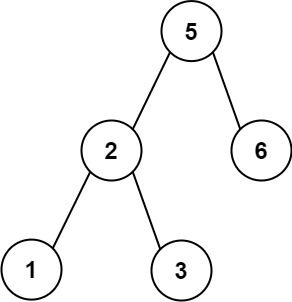

| Category | Difficulty | Likes | Dislikes |
|---|---|---|---|
| Algorithms | Medium | 1259 | 90 |
array | stack | tree | binary-search-tree | recursion | monotonic-stack | binary-tree
expedia | nvidia | tiktok | salesforce | zenefits
Given an array of unique integers preorder, return true if it is the correct preorder traversal sequence of a binary search tree.
Example 1:

Input: preorder = [5,2,1,3,6]
Output: trueExample 2:
Input: preorder = [5,2,6,1,3]
Output: false
Constraints:
1 <= preorder.length <= 1041 <= preorder[i] <= 104preorder are unique.
Follow up: Could you do it using only constant space complexity?